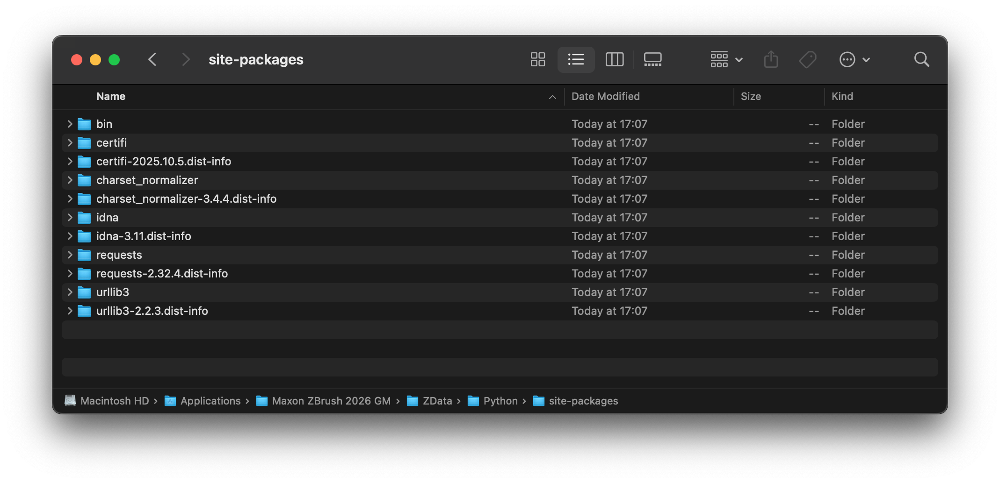

Importing Libraries¶
Explains how to provide and import libraries in your plugins.
When writing Python scripts or plugins for ZBrush, you might want to use external libraries that are not included in the standard library. To do so, you have to make sure that the libraries are available in the module search paths of the ZBrush Python Virtual Machine (VM). There are three main strategies to achieve this, of which each has its own advantages and disadvantages:
Local Dependencies: Ship the dependencies alongside your script and modify the module search paths at runtime.
Global Dependencies: Manually copy the library files to one of the module search paths of ZBrush.
External Package Manager: Use an external package manager to install dependencies to a known location and modify the module search paths at runtime.
Warning
Other than a standard CPython VM, ZBrush uses a shared Python VM where modules from multiple authors might run at the same time. This requires the use of special strategies to avoid conflicts between code from multiple authors. See Virtual Machine for a more in depth discussion of this topic.
Local Dependencies¶
Local dependencies are generally the preferred way of shipping libraries with your plugin. The general strategy is to isolate the dependencies of your plugin and only handle them locally. In a certain sense, this is similar to ‘normal’ Python code, where we can just out of the box can import libraries that lie next to our script. The main difference is that we have to handle module search paths and potential import conflicts with other plugins ourselves.
Advantages
Each plugin can use its required version of a library, without interfering with other plugins (when using the more complex approach).
Other plugins cannot accidentally import your dependencies (always the case).
Users do not have to deal with installing your dependencies.
Disadvantages
Can lead to import conflicts, causing your plugin or others to malfunction when not handled properly.
Module states cannot be shared between multiple imports when using the more complex approach. E.g., invoking
my_lib.state = 1in one plugin will not affectmy_lib.statein another plugin, as they both use their own isolated copy of the module. This could be mitigated by an even more complex approach that locally shares module objects.Complex libraries cannot be shipped by copying, as they always require a package manager setup script to run, to be functional at all or in certain aspects. numpy is a well known example for such a library, which can malfunction when just copied.
This gets much more complicate when your dependencies have their own dependencies. You then have to handle the whole dependency tree yourself. Even with the simple approach this can lead to import conflicts.
Note
Although the list of disadvantages might seem long, local dependencies are still the preferred way of shipping libraries with your plugin. Most dependencies are simple enough to be copied, and do not require complex dependency handling. Import conflicts can be mitigated by using the approaches described below.
The general idea is to place the dependencies in a subfolder of your plugin. One has then two options how to handle imports.
Complex Approach: Isolate both the module search paths and the module objects of your dependencies, so that they cannot interfere with other plugins.
Simple Approach: Only isolate the module search paths, but not the module objects. This is less complex, but can lead to import conflicts if multiple plugins use libraries of the same name. The module name collision can be mitigated by renaming the libraries to a unique name, e.g.,
my_plugin_requestsinstead ofrequests.
In any case, you would use a folder structure for your plugin as shown below.
MyPlugin
├── init.py // The entry point of your plugin that is executed on startup.
├── README.md
└── libs // Folder containing dependencies.
├── requests // Or my_plugin_requests for the simple approach.
│ ├── __init__.py
│ ├── ...
└── urllib3 // Or my_plugin_urllib3 for the simple approach.
├── __init__.py
├── ...
For the more complex approach, the code in your init.py would then look like this:
"""Demonstrates how to import local dependencies without affecting the global module state, to prevent
version conflicts in a shared environment.
"""
import os
import sys
import importlib
# Inject the libs directory of this plugin in front of the module search paths, so that we can
# import from there and can be sure our dependencies are found first.
libs_dir: str = os.path.join(os.path.dirname(os.path.abspath(__file__)), "libs")
if not os.path.isdir(libs_dir):
raise FileNotFoundError(f"The expected libs directory does not exist: {libs_dir}")
sys.path.insert(0, libs_dir)
# Now we can import our dependencies. But when there is another plugin that uses a module
# or package named 'requests' or 'urllib3', we will run into import conflicts.
#
# - One of the plugins import code has to run first, and place its imported modules in sys.modules.
# - The other plugins import statements might then just be ignored by Python, as it considers that
# module already imported, or in some rare cases - and that is the worst case - partially replace
# the imported module object.
# - In the best case, one of the plugins will not work, in the worst case, both plugins
# will not work.
#
# To deal with this, we must manage:
#
# 1. A module of the same name already existing in sys.modules.
# 2. Leaving sys.modules in the state we found it, so that other plugins are not affected.
#
# The following code implements this. This can be done in an even more complex way, supporting
# module reloads and more complex import statements. But ZBrush currently does not support
# runtime reloading of plugins, and simple #import statements are sufficient for most use cases.
# A dictionary to store original module states in.
module_states: dict[str, object] = {}
# Import our dependencies, but first remove any existing modules with the same name from
# sys.modules, so that they cannot prevent our imports.
try:
# Either store conflicting modules in our backup or place a None marker there, so that we
# know if we can just remove an entry in sys.modules or have to restore something when
# unwinding below.
for name in ["requests", "urllib3"]:
module_states[name] = sys.modules.pop(name, None)
from libs import requests
from libs import urllib3
# Restore the original state of sys.modules to prevent conflicts with other plugins and
# clean up the module search paths. This will not affect the already imported module objects
# in this module.
finally:
if libs_dir in sys.path:
sys.path.remove(libs_dir)
for name, module in module_states.items():
if module is not None:
sys.modules[name] = module
else:
sys.modules.pop(name, None)
...
For the less complex approach, the code in your init.py would look like this:
"""Demonstrates how to import local dependencies without affecting the module search paths of other plugins.
"""
import os
import sys
# Inject the libs directory of this plugin in front of the module search paths, so that we can
# import from there.
libs_dir: str = os.path.join(os.path.dirname(os.path.abspath(__file__)), "libs")
if not os.path.isdir(libs_dir):
raise FileNotFoundError(f"The expected libs directory does not exist: {libs_dir}")
sys.path.insert(0, libs_dir)
# As a minimal safeguard against import conflicts we can check if the modules we want to import
# already exist in sys.modules. But this is optional.
for name in ["my_plugin_requests", "my_plugin_urllib3"]:
if name in sys.modules: # A more sophisticated version could check the module file path as well.
raise ImportError(f"A module named '{name}' already exists in sys.modules, cannot continue.")
# Now we can import our uniquely named dependencies without interfering with other plugins.
from libs import my_plugin_requests as requests
from libs import my_plugin_urllib3 as urllib3
# We should still clean up after ourselves, and remove the libs path from the search paths, so
# that other code cannot accidentally import our dependencies.
if libs_dir in sys.path:
sys.path.remove(libs_dir)
...
Global Dependencies¶
Global dependencies are the second-best option of shipping dependencies with your script. If you are the only user in your environment (i.e., you provide all plugins for your ZBrush installation), this can be the best option, provided all your plugins use the same dependency versions.
Advantages
All plugins can use the same instance of a library, preventing import conflicts.
The simplest approach to implement of the three strategies.
Disadvantages
One cannot use different versions of a library for different plugins, or generally have libraries of the same name but different content.
Users have to manually install your dependencies or you have to write installer scripts.
Complex libraries cannot be shipped by copying, as they always require a package manager setup script to run, to be functional at all or properly in a specific path. numpy is a well known example for such a library.
The general idea is to copy the dependencies to one of the plugin search paths of ZBrush, so that they are available to all plugins. See Environment Variables for details on configuring plugin search paths.. For this folder structure:
MyPlugin
├── my_plugin.py // Your main plugin script that is executed on startup and relies on the dependencies.
├── README.md
├── installer.py // Installer script or instructions to copy dependencies to a global module path.
└── libs // Folder containing dependencies which must be copied to a global module path.
├── requests
│ ├── __init__.py
│ ├── ...
└── urllib3
├── __init__.py
├── ...
Your code would then just be ‘normal’ imports statements like this:
"""Demonstrates how to import global installed dependencies.
"""
import requests
import urllib3
...
Package Managers¶
ZBrush is currently not being shipped with a package manager such as pip or poetry. Is it is currently also not possible to manually install pip in ZBrush, as pip heavily relies on starting subprocesses, which is not supported in the ZBrush Python VM. But you can still use an external package manager to install dependencies to a known location, and then modify the module search paths at runtime to include that location.
Advantages
Can deal even with the most complex dependencies; which cannot be handled by the other two strategies.
Disadvantages
Requires a CPython installation of matching version to the ZBrush Python VM (Python 3.11.9 for ZBrush 2026.1).
Can lead to import conflicts, when the package manager mixes up dependencies in the local CPython installation and ZBrush.
Users have to manually install your dependencies or you have to write installer scripts.
When done by multiple authors, this can again lead to import conflicts when not using a unified path for all dependencies or when overwriting dependencies of other authors.
We recommend using and setting up a dedicated path for ZBrush packages, e.g., ZBrush/ZData/Python/site-packages and to exactly match the Python version of ZBrush when installing packages there. You can then modify the module search paths at runtime to include this path, after installing the dependencies as shown at the example of the requests library below (the example is for macOS, but the steps will be identical on Windows).
# Create the target directory for ZBrush packages.
mkdir -p '/Applications/ZBrush/ZData/Python/site-packages'
# Install the requests package to the target directory. This assumes that you have a Python of
# matching version installed and exposed the `pip` executable in your PATH (Python usually does
# this out of the box).
pip install --target '/Applications/ZBrush/ZData/Python/site-packages' requests
Collecting requests
Using cached requests-2.32.4-py3-none-any.whl.metadata (4.9 kB)
Collecting charset_normalizer<4,>=2 (from requests)
Using cached charset_normalizer-3.4.4-cp38-cp38-macosx_10_9_universal2.whl.metadata (37 kB)
...
Your folder should now look like this (as it also pulled all the dependencies of requests).

Fig. I: The installed requests package alongside its dependencies in the target folder.¶
And now we can import and use the requests library in our ZBrush plugin by modifying the module search paths at runtime.
"""Demonstrates how to import dependencies installed with an external package manager.
"""
import os
import sys
# Inject the global site-packages directory in front of the module search paths, so that we can
# import from there.
site_packages_dir: str = os.path.join(os.path.dirname(sys.executable), "ZData", "Python", "site-packages")
if not os.path.isdir(site_packages_dir):
raise FileNotFoundError(f"The expected site-packages directory does not exist: {site_packages_dir}")
sys.path.insert(0, site_packages_dir)
import requests
# Clean up after ourselves, and remove the site-packages path from the search paths, so
# that other code cannot accidentally import our dependencies.
if site_packages_dir in sys.path:
sys.path.remove(site_packages_dir)
...
See also¶
Editor Configuration
Explains how to configure a code editor for ZBrush script development.
Style Guide
Explains the code style and conventions used in this SDK.